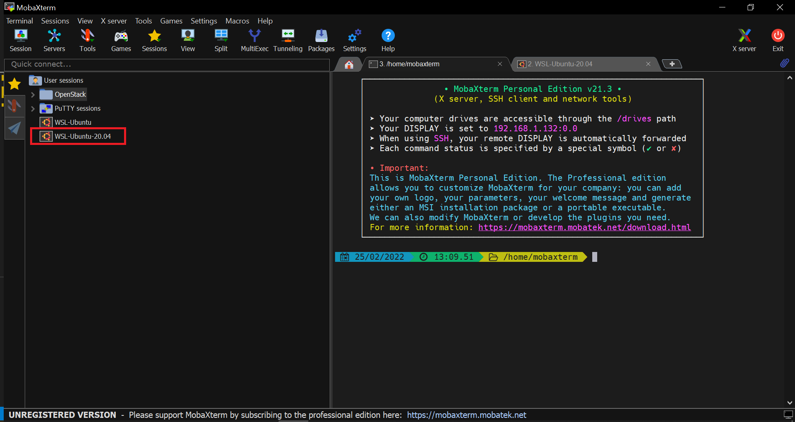
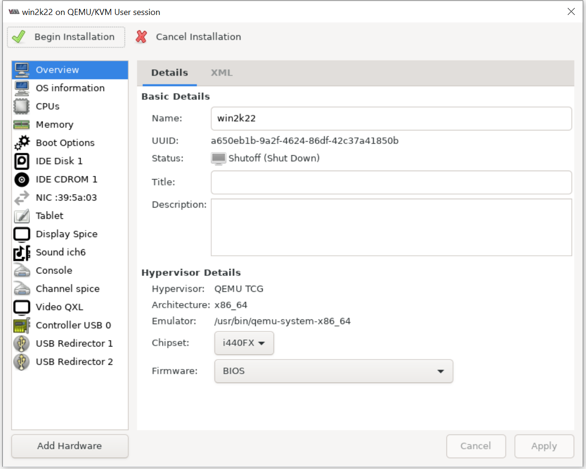
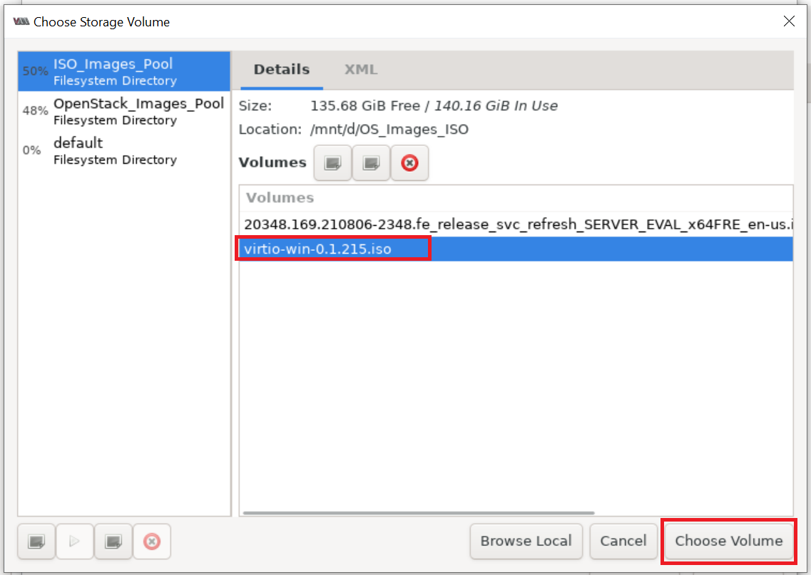
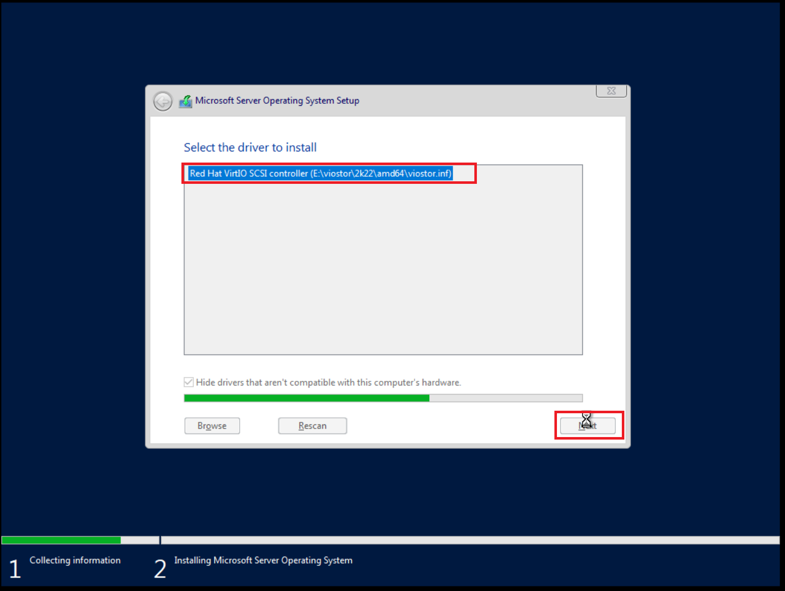
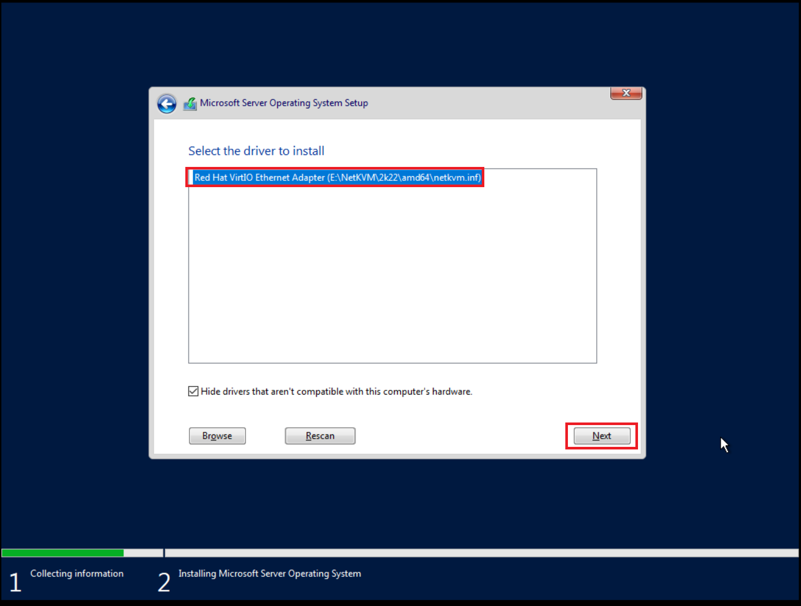
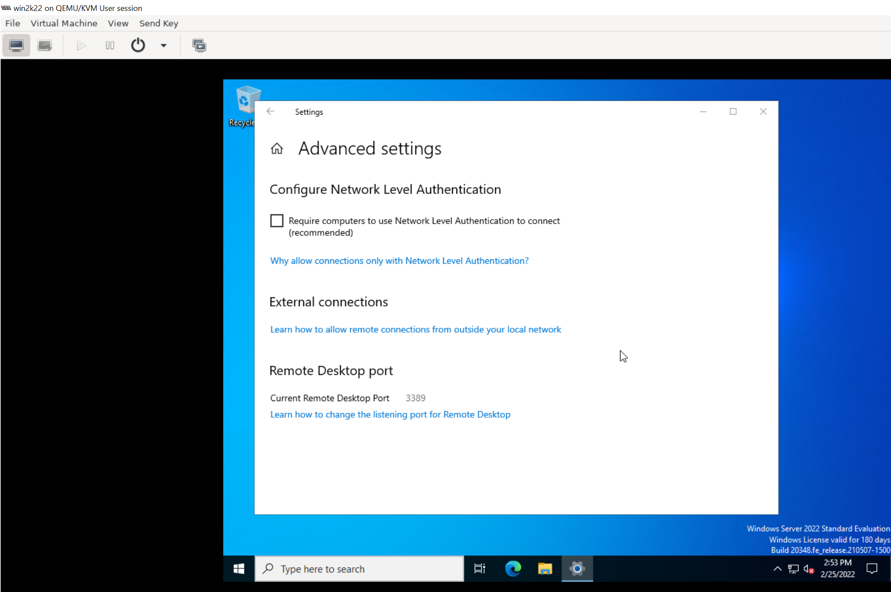
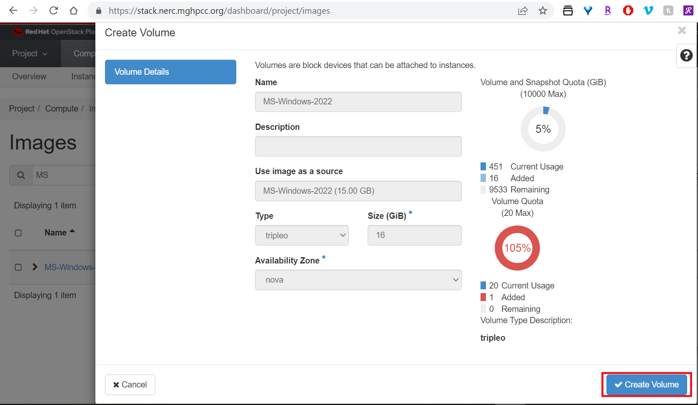
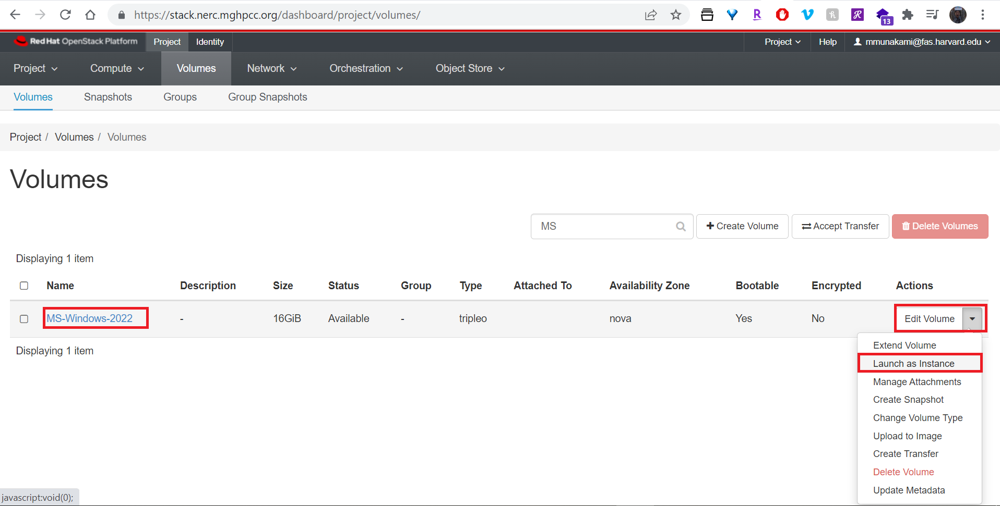
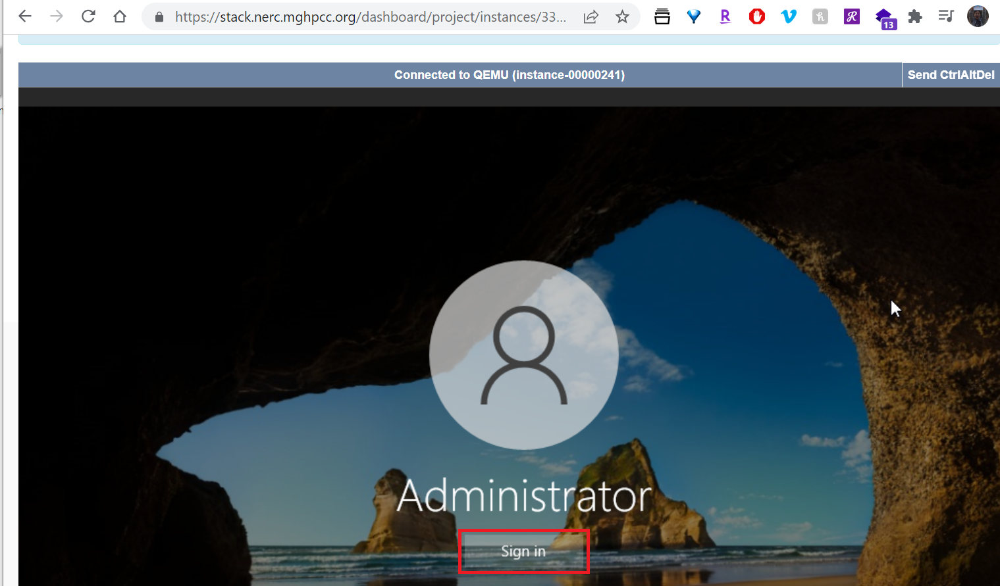
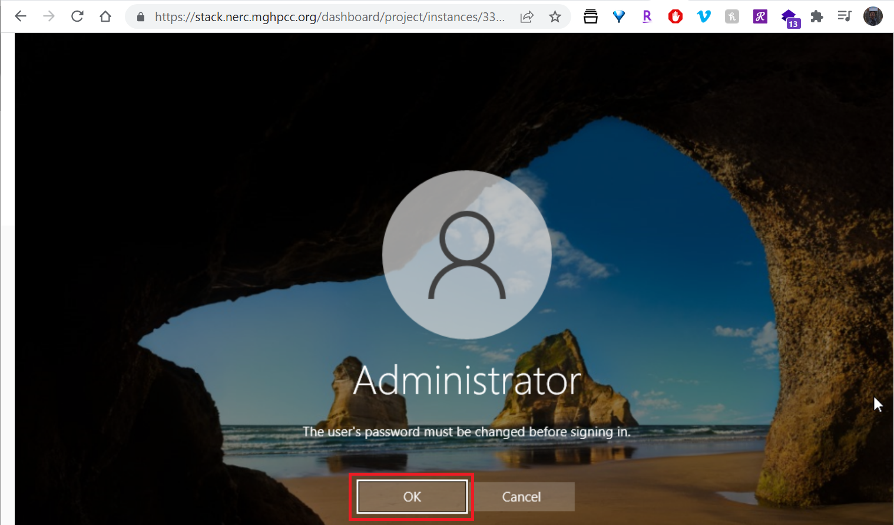

Virtual Machine Image Guide
An OpenStack Compute cloud needs to have virtual machine images in order to launch an instance. A virtual machine image is a single file which contains a virtual disk that has a bootable operating system installed on it.
Very Important
The provided Windows Server 2022 R2 image is for evaluation only. This evaluation edition expires in 180 days. This is intended to evaluate if the product is right for you. This is on user discretion to update, extend, and handle licensing issues for future usages.
Existing Microsoft Windows Image
Cloudbase Solutions provides Microsoft Windows Server 2022 R2 Standard Evaluation for OpenStack. This includes the required support for hypervisor-specific drivers (Hyper-V / KVM). Also integrated are the guest initialization tools (Cloudbase-Init), security updates, proper performance, and security configurations as well as the final Sysprep.
How to Build and Upload your custom Microsoft Windows Image
Overall Process
To create a new image, you will need the installation CD or DVD ISO file for the guest operating system. You will also need access to a virtualization tool. You can use KVM hypervisor for this. Or, if you have a GUI desktop virtualization tool (such as, virt-manager, VMware Fusion or VirtualBox), you can use that instead. Convert the file to QCOW2 (KVM, Xen) once you are done.
You can customize and build the new image manually on your own system and then upload the image to the NERC's OpenStack Compute cloud. Please follow the following steps which describes how to obtain, create, and modify virtual machine images that are compatible with the NERC's OpenStack.
1. Prerequisite
Follow these steps to prepare the installation
a. Download a Windows Server 2022 installation ISO file. Evaluation images are available on the Microsoft website (registration required).
b. Download the signed VirtIO drivers ISO file from the Fedora website.
c. Install Virtual Machine Manager on your local Windows 10 machine using WSL:
-
Enable WSL on your local Windows 10 subsystem for Linux:
The steps given here are straightforward, however, before following them make sure on Windows 10, you have WSL enabled and have at least Ubuntu 20.04 or above LTS version running over it. If you don’t know how to do that then see our tutorial on how to enable WSL and install Ubuntu over it.
-
Download and install MobaXterm:
MobaXterm is a free application that can be downloaded using this link. After downloading, install it like any other normal Windows software.
-
Open MobaXterm and run WSL Linux:
As you open this advanced terminal for Windows 10, WSL installed Ubuntu app will show on the left side panel of it. Double click on that to start the WSL session.

-
Install Virt-Manager:
sudo apt update sudo apt install virt-manager -
Run Virtual Machine Manager:
Start the Virtual Machine Manager running this command on the opened terminal:
virt-manageras shown below:
This will open Virt-Manager as following:

-
Connect QEMU/KVM user session on Virt-Manager:

2. Create a virtual machine
Create a virtual machine with the storage set to a 15 GB qcow2 disk image using Virtual Machine Manager


Please set 15 GB disk image size as shown below:

Set the virtual machine name and also make sure "Customize configuration before install" is selected as shown below:

3. Customize the Virtual machine

Enable the VirtIO driver. By default, the Windows installer does not detect the disk.

Click Add Hardware > select CDROM device and attach to downloaded virtio-win-* ISO file:



Make sure the NIC is using the virtio Device model as shown below:
Make sure to set proper order of Boot Options as shown below, so that CDROM with Windows ISO is set on the first and Apply the order change. After this please begin windows installation by clicking on "Begin Installation" button.
Click "Apply" button.
4. Continue with the Windows installation
You need to continue with the Windows installation process.
When prompted you can choose "Windows Server 2022 Standard Evaluation (Desktop Experinece)" option as shown below:

Load VirtIO SCSI drivers and network drivers by choosing an installation target when prompted. Click Load driver and browse the file system.


Select the E:\virtio-win-*\viostor\2k22\amd64 folder. When converting an
image file with Windows, ensure the virtio driver is installed. Otherwise,
you will get a blue screen when launching the image due to lack of the virtio
driver.
The Windows installer displays a list of drivers to install. Select the VirtIO SCSI drivers.

Click Load driver again and browse the file system, and select the
E:\NetKVM\2k22\amd64 folder.

Select the network drivers, and continue the installation.



5. Restart the installed virtual machine (VM)
Once the installation is completed, the VM restarts
Define a password for the Adminstrator when prompted and click on "Finish" button:

Send the "Ctrl+Alt+Delete" key using Send Key Menu, this will unlock the windows and then prompt login for the Administrator - please login using the password you set on previous step:


6. Go to device manager and install all unrecognized devices


Similarly as shown above repeat and install all missing drivers.
7. Enable Remote Desktop Protocol (RDP) login
Explicitly enable RDP login and uncheck "Require computers to use Network Level Authentication to connect" option


8. Delete the recovery parition
Delete the recovery parition which will allow expanding the Image as required running the following commands on Command Prompt (Run as Adminstrator)
diskpart
select disk 0
list partition
select partition 3
delete partition override
list partition

and then extend C: drive to take up the remaining space using "Disk Management".


9. Install any new Windows updates. (Optional)
10. Setup cloudbase-init to generate QCOW2 image
Download and install stable version of cloudbase-init (A Windows project providing guest initialization features, similar to cloud-init) by browsing the Download Page on the web browser on virtual machine running Windows, you can escape registering and just click on "No. just show me the downloads" to navigate to the download page as shown below:
During Installation, set Serial port for logging to COM1 as shown below:

When the installation is done, in the Complete the Cloudbase-Init Setup Wizard window, select the Run Sysprep and Shutdown check boxes and click "Finish" as shown below:

Wait for the machine to shutdown.
11. Where is the newly generated QCOW2 image?
The Sysprep will generate QCOW2 image i.e. win2k22.qcow2 on /home/<YourUserName>/.local/share/libvirt/images/
12. Create OpenStack image and push to NERC's image list
You can copy/download this windows image to the folder where you configured your OpenStack CLI as described Here and upload to the NERC's OpenStack running the following OpenStack Image API command:
openstack image create --disk-format qcow2 --file win2k22.qcow2 MS-Windows-2022
You can verify the uploaded image is available by running:
openstack image list
+--------------------------------------+---------------------+--------+
| ID | Name | Status |
+--------------------------------------+---------------------+--------+
| 7da9f5d4-4836-4bv8-bc5e-xc07ac6d8171 | MS-Windows-2022 | active |
| ... | ... | ... |
+--------------------------------------+---------------------+--------+
13. Launch an instance using newly uploaded MS-Windows-2022 image
Login to the NERC's OpenStack and verify the uploaded MS-Windows-2022 is there also available on the NERC's OpenStack Images List for your project as shown below:

Create a Volume using that Windows Image:


Once successfully Volume is created, we can use the Volume to launch an instance as shown below:

Add other information and setup a Security Group that allows RDP as shown below:


Click on detail view of the Instance and then click on Console tab menu and click on "Send CtrlAltDel" button located on the top right side of the console as shown below:





14. How to have Remote Desktop login to your Windows instance
Remote Desktop login should work with the Floating IP associated with the instance: